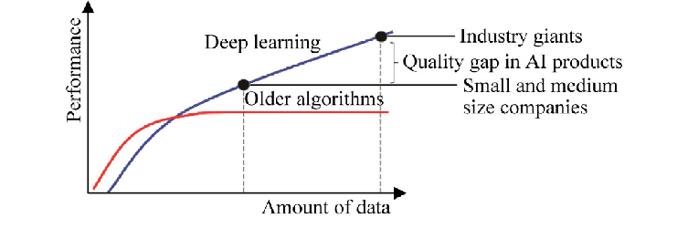
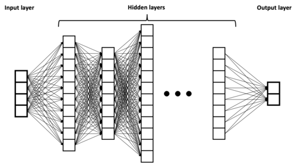

Data Analysis for Big Data: Overview¶
The term “data analysis” is frequently used to describe either the entire process of data-driven applications or just the data processing and analysis steps outlined in the Big Data Life Cycle. We will focus on the data analysis step as the final stage of the lifecycle in which we convert the prepared datasets to the final products of the application that will provide value to the user.
Products of Data Analysis¶
Data analysis involves processing and interpreting large and complex datasets to extract valuable insights and patterns. The following are the primary products of data analysis:
Reports and Dashboards: Data analysis results are often presented in the form of reports and dashboards that provide a concise and intuitive overview of the insights gained from the data. These visualizations help decision-makers understand the results of the analysis quickly and easily.
Models: Models are mathematical representations or approximations of real-world phenomena created through data analysis. They are used to identify patterns, relationships, and trends within large data sets, and can be used for a variety of applications such as prediction, classification, clustering, and time-series analysis. Models are crucial in gaining insights into complex systems, testing hypotheses, and optimizing processes.
Optimized Algorithm/Procedure: Data analysis can also help to optimize algorithms and procedures for data processing and analysis. This can result in faster processing times, improved accuracy, and increased efficiency in data-driven applications.
Datasets: Finally, data analysis can guide the creation of new datasets that can be used to train models, validate results, or further research. These datasets are often made publicly available to support research and development in various fields.
To produce these products, the developer will create models to model the data and extract insights from the data using the models. The insights are described and visualized to create reports.
When the reports are time sensitive, automatic data pipeline are created to create real-time reports as a dashboard for real-time monitoring.
The insights can also guide the improvement of certain algorithm or procedure or confirm the quality of the new datasets to be published for public usage.
There are many types of models ranged from simple statistical model to large deep learning models. Some models are only useful to generate metrics and visualizations and some are more powerful machine learning and deep learning models that can be employed in more advanced tasks. We will focus on machine learning models in this course.
Data Analysis in Big Data Context¶
In big data contexts, there are two scenarios:
Start big, finish small
The large volume of data become relatively smaller. Enough to create report, dashboard, traditional machine learning model and guide the optimization of algorithm/procedure.
Start big, finish big
Start with a big dataset, train a large deep learning model based on that. Or, create a large datasets.
Machine Learning Overview¶
Machine learning models, including deep learning, are a subset of artificial intelligence that allows computers to learn from data and make predictions or decisions without being explicitly programmed. These models can be trained on large datasets to identify patterns and relationships in the data and use that knowledge to make predictions or classifications on new, unseen data.
Machine learning models, including deep learning, rely on a set of parameters that are learned during the training process. These parameters determine the behavior of the model and affect its ability to make accurate predictions or classifications.
In traditional machine learning models, such as linear regression or logistic regression, the parameters are learned using analytical solutions or optimization techniques such as gradient descent. These models have a fixed set of parameters that are learned during the training process, and they do not require a large amount of data to train.
Deep learning models, on the other hand, are characterized by having many layers of interconnected neurons, and a large number of parameters that need to be learned. These models use stochastic gradient descent and backpropagation to update the parameters during the training process. The number of parameters in a deep learning model can be in the millions or even billions, depending on the size and complexity of the model.
Most Models Are Not “Big”¶
One important concept to clarify here is that while big data analysis is often associated with large volumes of data, most data analysis approaches are not “big” at all, with the exception of large deep learning models. This is because the amount of information required for many data analysis tasks is often limited, and can be effectively processed with smaller datasets.
For example, generating a visualization or training a traditional machine learning model often only requires a subset of the available data. Even when large datasets are provided, only a limited amount of information may be extracted from them. In many cases, the performance of a model using a large volume of data is identical to the performance of the same model using a random subset of the data.
Therefore, in most data analysis applications, the focus should be on finding the best subset of the available data to complete the analysis. This can be achieved by carefully selecting the relevant features or variables, or by using techniques such as data sampling or dimensionality reduction to reduce the amount of data without sacrificing accuracy.
{kind=link}
Credit: Andrew Ng, CC BY-SA 4.0 <https://creativecommons.org/licenses/by-sa/4.0>, via Wikimedia Commons
Deep Learning Models for Big Data¶
Deep learning models are a specific type of machine learning model that are designed to process and analyze large and complex datasets. These models are based on artificial neural networks that are inspired by the structure and function of the human brain.
One of the key advantages of deep learning models is their ability to learn and extract complex patterns from data. This is due to their large number of parameters, which can range from millions to billions, and allows them to model highly nonlinear and intricate relationships between input and output data. This makes them particularly useful in applications such as image and speech recognition, natural language processing, and autonomous systems, where there is a vast amount of data that needs to be processed and analyzed.
Note
External reading
However, the large number of parameters in deep learning models also means that they require a significant amount of data to train effectively. In fact, they are the only exception to the general rule that most data analysis approaches do not require large datasets. The more data that is available, the more accurately the model can be trained, and the better its performance will be on new, unseen data.
As a result, deep learning models are currently the focus of much research in the field of big data applications. Many industries, including healthcare, finance, and transportation, are exploring the potential of deep learning models to analyze and extract insights from their data. However, it is important to note that the use of deep learning models also comes with its own set of challenges, including the need for specialized hardware, the risk of overfitting, and the potential for bias in the data. Therefore, it is important to carefully consider the suitability of deep learning models for a given task, and to ensure that they are trained and evaluated appropriately.
Credit: BrunelloN, CC BY-SA 4.0 <https://creativecommons.org/licenses/by-sa/4.0>, via Wikimedia Commons